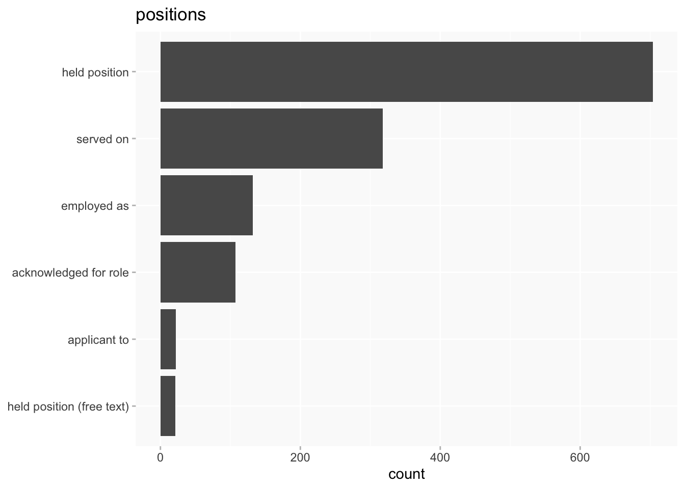
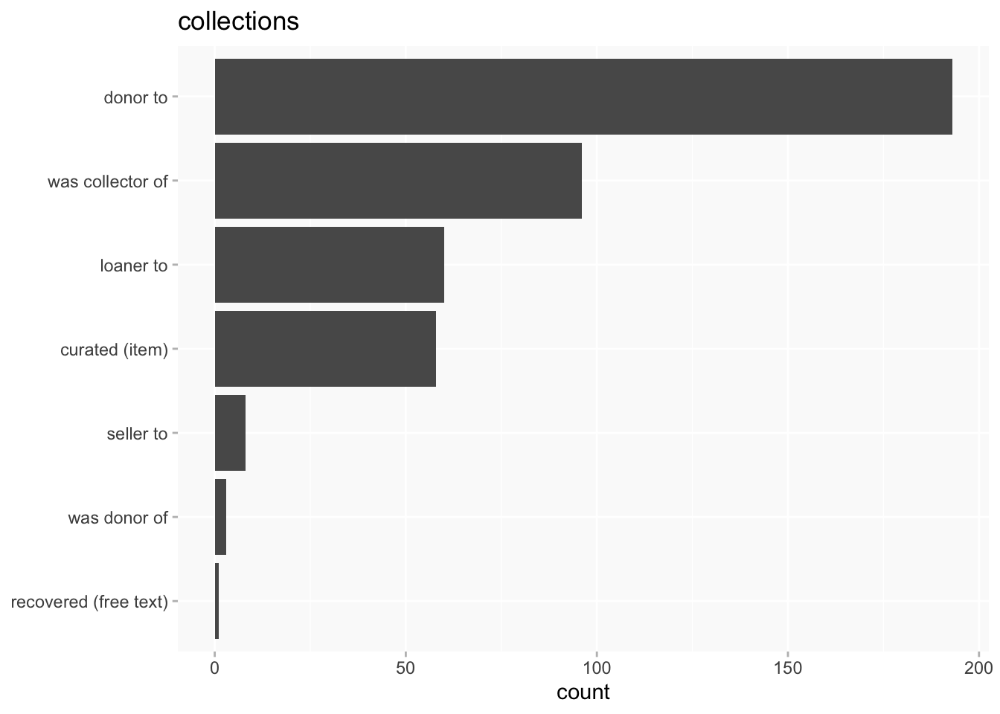
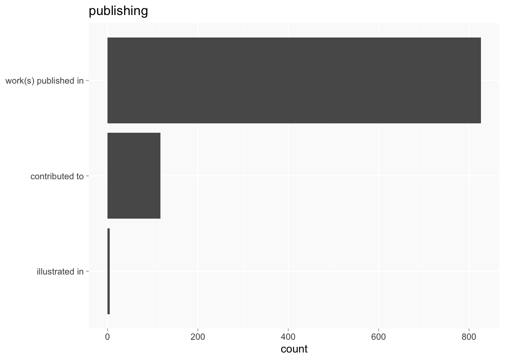
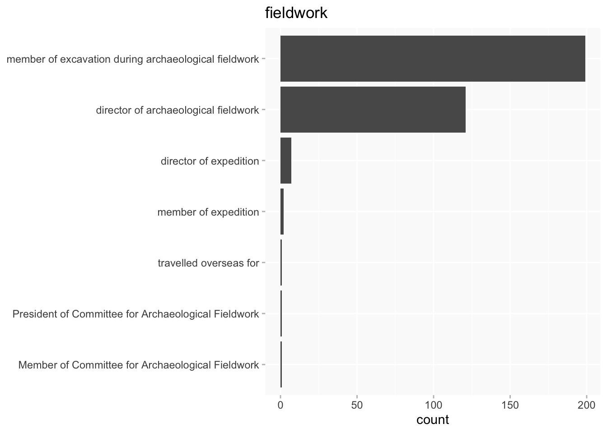

| bucket | ppa | n |
|---|---|---|
| charitable | benefactor to | 4 |
| charitable | founded | 13 |
| charitable | fundraiser for | 5 |
| collections | curated (item) | 58 |
| collections | donor to | 193 |
| collections | loaner to | 60 |
| collections | recovered (free text) | 1 |
| collections | seller to | 8 |
| collections | was collector of | 96 |
| collections | was donor of | 3 |
| education | educated at | 409 |
| elections | election to Council of CAS proposed by | 1 |
| elections | election to RAI proposed by | 336 |
| elections | election to SAL proposed by | 111 |
| elections | proposed election to RHS signed by (personal) | 26 |
| events | attended | 21 |
| events | exhibited at | 223 |
| events | organiser of | 30 |
| events | performed at | 17 |
| events | spoke at | 999 |
| events | was delegate at (free text) | 3 |
| events | was delegate at (item) | 46 |
| fieldwork | Member of Committee for Archaeological Fieldwork | 1 |
| fieldwork | President of Committee for Archaeological Fieldwork | 1 |
| fieldwork | director of archaeological fieldwork | 121 |
| fieldwork | director of expedition | 7 |
| fieldwork | member of excavation during archaeological fieldwork | 198 |
| fieldwork | member of expedition | 2 |
| fieldwork | travelled overseas for | 1 |
| none | area of expertise | 35 |
| none | collaborated with | 128 |
| none | editor | 2 |
| none | published with | 3 |
| positions | acknowledged for role | 107 |
| positions | applicant to | 22 |
| positions | employed as | 130 |
| positions | held position | 703 |
| positions | held position (free text) | 22 |
| positions | served on | 314 |
| publishing | contributed to | 117 |
| publishing | illustrated in | 5 |
| publishing | work(s) published in | 826 |
| societies | corresponded with | 281 |
| societies | was fellow of | 220 |
| societies | was member of | 1142 |
PPA Buckets
ppa
Categories for public and professional activities
Wikibase queries
The buckets are not part of the wikibase, but as the number is quite small they can be hand-coded into a query. The query below is a starting point for this.
Notes
The purpose of the buckets is to group PPAs together in reasonably coherent (and not too unbalanced) categories to facilitate various kinds of analysis from comparative overviews to digging into the detail of specific categories.
Not all PPAs are in buckets! Some are more useful for network-y analysis.
- publishing will need reviewing once we have more bibliographical data (eg
editorspecifically intended for editions of primary sources) corresponded withshould only be included in buckets if it’s to an institution rather than an individual, but I haven’t yet amended queries to handle that. (Correspondence with individuals is a small minority of results at present.)- charitable/organisational is a very small bucket that will probably be mostly ignored for big picture stuff
- collections and fieldwork are buckets i haven’t looked at at all yet, will need to do something about that soon.
Overview
Labels for activities within buckets have been omitted as a) there isn’t space for them and b) this just gives an overview of distributions.

By bucket





